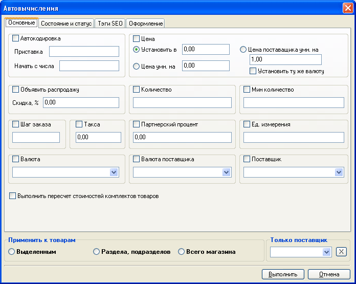
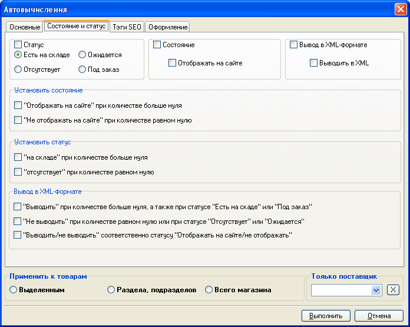
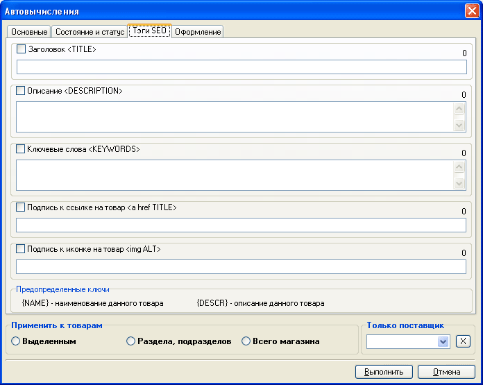
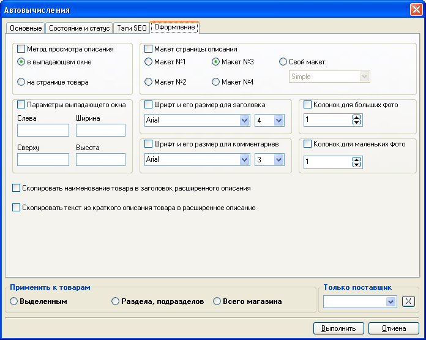

Для единообразного изменения общих данных и тегов SEO, хранящихся в карточке товара, сразу для группы товаров удобно воспользоваться функцией "автовычисления". Также удобно использовать автовычисления для назначения статуса и цены после импорта. Вызов окна автовычислений осуществляется из главного меню программы "Товары - Автовычисления"
Необходимость в автовычислениях часто возникает после импорта и обновления товара. При этом возможно установление состояния: "Отображать на сайте" / "Не отображать на сайте" или статуса: "Есть на складе" / "Отсутствует" когда количество товара равно нулю или отлично от нуля. Таким образом, можно определить тактику магазина: скрывать отсутствующие товары, либо оставлять для обзора. Второй вариант предпочтительнее, поскольку поисковые машины будут все равно приводить покупателей в магазин, и, возможно, при отсутствии данного товара, покупатель подберет аналогичный. При изменении статуса с "Есть на складе" или "Под заказ" на "Ожидается" или "Отсутсвует" предлагается установить поле "Количество" в ноль.
Помимо того, в случае объявления распродажи валюта, в которой указывается цена распродажи, устанавливается в соответствии с валютой, указанной в карточке товара для его цены.

На второй закладке окна автовычислений возможно задание условий установления состояния и статуса, а также отображение товара в XML, в зависимости от количества товара:

На третьей закладке назначаются тэги SEO, подлежащие назначению группе товаров:

При использовании функции автовычисления применительно к тегам SEO для единообразия назначения тегов для группы однородных товаров можно воспользоваться предопределенными ключами, задав, например, для раздела с холодильниками "Заголовок <Title>" в виде "Холодильник {Name}", а подпись к иконке на товар в виде "Изображение холодильника {Name}".
Указав подлежащие переопределению данные, можно выбрать область применения автовычислений: к выделенным товарам, товарам раздела и входящих в него подразделов или товарам всего магазина. В случае, если имеется группа выделенных товаров, то по умолчанию предлагается область применения автовычислений "К выделенным товарам".
И на конец, на последней закладке "Оформление", задаются параметры позволяющие изменить настройки отображения расширенного описания товаров:
